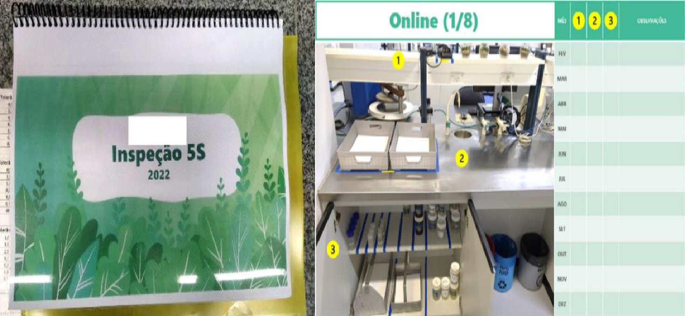
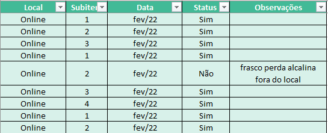
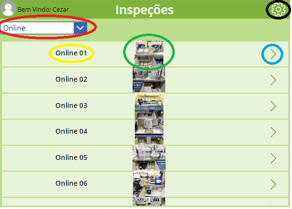
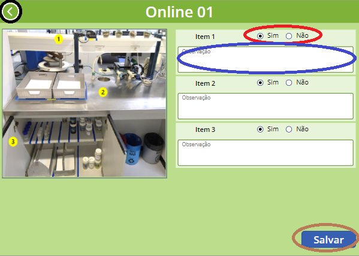
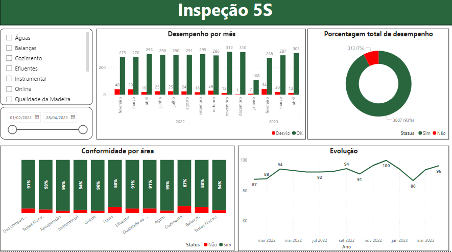

- Período
- 2023, durante o estágio no controle técnico da qualidade
- Meu papel
- Desenvolvi o aplicativo, a lista no SharePoint e o painel, e conduzi a inspeção piloto e a pesquisa com os usuários
- Status
- Inspeção piloto realizada em 31/03/2023 e documentada no TCC
Problema
A inspeção 5S do laboratório era feita à mão e lançada em planilha. Isso abria espaço para erros, retrabalho e uma visão limitada da evolução do programa.
O que eu fiz
- Desenvolvi um aplicativo em Power Apps com cadastro de áreas, subáreas e foto padrão de cada ambiente.
- Na inspeção, o auditor marca conformidade ou não conformidade e registra o motivo; os dados vão direto para o SharePoint.
- Construí um painel em Power BI com tendência no tempo e comparação entre períodos e áreas.
- Fiz uma inspeção piloto em 31/03/2023 e avaliei o resultado com os usuários.
Como funciona
- Power Appso auditor escolhe a área, compara com a foto padrão e marca conformidade ou não conformidade, com o motivo
- SharePointcada resposta vira um registro numa lista, sem digitação em planilha
- Power BIpainel com a evolução no tempo e a comparação entre períodos e áreas
Antes e depois
A mesma inspeção em dois momentos: anotada à mão num caderno e redigitada em planilha, e depois feita direto no aplicativo, com os dados chegando sozinhos ao painel.
No papel
O auditor percorria o laboratório com o caderno, marcava cada item à mão e depois passava tudo para uma planilha.


No aplicativo
A inspeção passou a ser feita no celular ou no tablet, na frente da bancada, e cada resposta já vai para o SharePoint.


O painel
Sem digitação intermediária, o painel mostra a situação de cada área e a evolução do programa.

Imagens do TCC de Cézar Santos Gonçalves, Engenharia de Produção, UESC, 2023. As marcações coloridas nas telas são do próprio trabalho e indicam os comandos explicados nele. Toque numa imagem para ver em tamanho original.
Resultado
- Os 5 responsáveis pelo 5S consultados perceberam o processo como mais ágil; 3 deles, muito mais ágil.
- Todos se declararam satisfeitos com a automação e consideraram a interface fácil de usar.
- O lançamento manual em planilha deixou de ser necessário: a resposta registrada no aplicativo já alimenta o painel.
Como foi medido: A agilidade é a percepção dos usuários, colhida em pesquisa depois da inspeção piloto. O tempo de inspeção não foi cronometrado antes e depois.
Tecnologias
- Power Apps
- SharePoint
- Power BI
- 5S
Evidências
Trabalho de conclusão de curso: "Estudo de caso: Power Apps como ferramenta de apoio na gestão do 5S em um laboratório de uma fábrica de celulose" (UESC, 2023).
O trabalho descreve as telas do aplicativo, o painel e a pesquisa com os usuários.